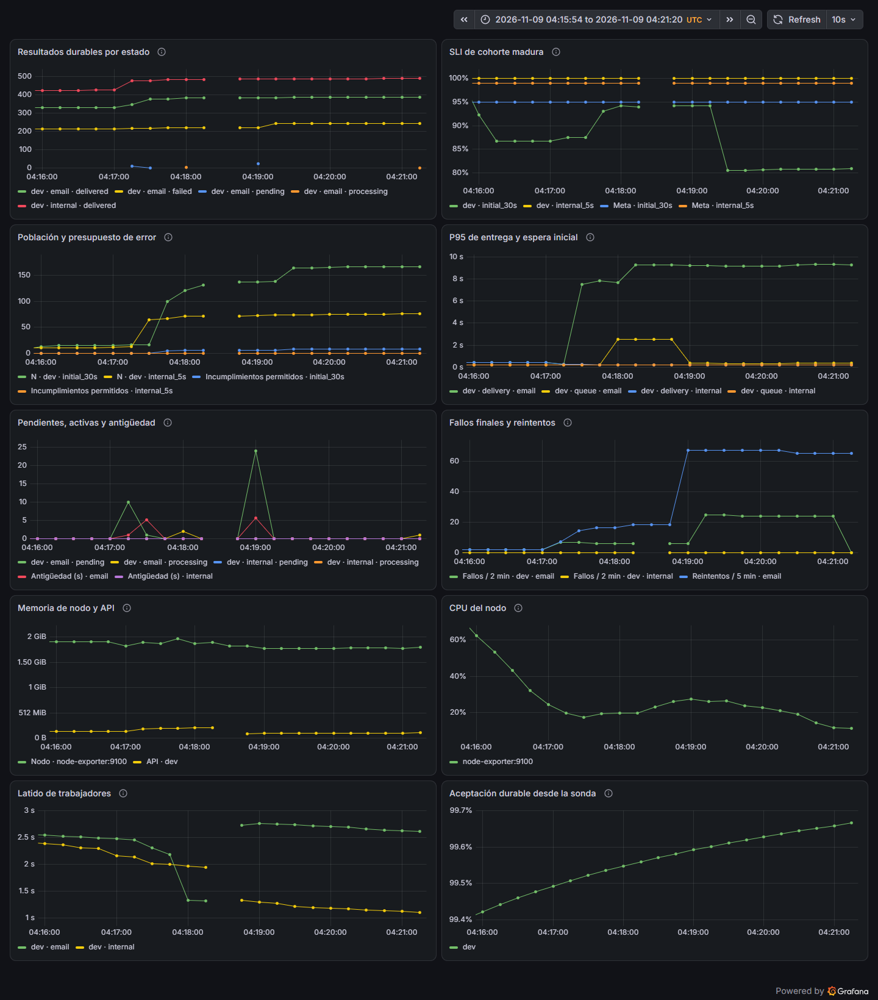
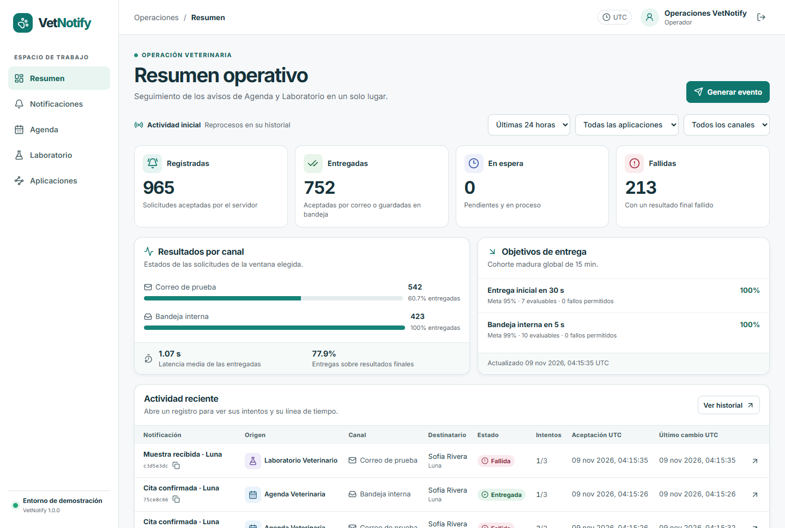

Notificaciones multicanal para operaciones veterinarias
DevOps y Métricas de Software · Escenario 1
Confirma, reprograma o cancela citas.
Informa que llegó una muestra o que hay un resultado ficticio.
El simulador guarda un recibo verificable.
El destinatario consulta sus avisos persistentes.

| Paso | Registro |
|---|---|
| Identidad | La clave de máquina identifica el origen. |
| Transacción | Inserta notificación, trabajo e historial accepted/pending. |
| Respuesta | HTTP 202, Location e ID después del commit. |
| Efecto | Un worker registra el recibo de correo o la entrada de bandeja. |
El intento ya tiene número y token en PostgreSQL.
Al vencer el lease, otro worker conserva el contador y recupera la operación.
Una derivada recibe su propio ID, trabajo y auditoría.
La original conserva el fallo y el historial para el análisis.
| Decisión | Configuración |
|---|---|
| Cómputo | VM D2s v4, 2 vCPU y 8 GiB en México Central. |
| Estado | Blob privado con OAuth, lease y versiones. |
| Arranque | Cloud-init instala K3s y Caddy con versiones fijadas. |
| Persistencia | PVC local-path para PostgreSQL, Prometheus, Grafana y Jaeger. |
| Control | Efecto |
|---|---|
| Namespaces dev/prod | Configuración, base, PVC y secretos separados. |
| TLS y NSG | Caddy sirve HTTPS. SSH tiene una IP autorizada. |
| Readiness | Sin base disponible, Kubernetes retira el endpoint. |
| Liveness | El kubelet reinicia un contenedor que falla la probe. |
| Indicador | Población y objetivo |
|---|---|
| Entrega inicial en 30 s | Originales de ambos canales. Meta 95% en 15 min. |
| Bandeja en 5 s | Originales internos. Meta 99% en 15 min. |
| Aceptación durable | Peticiones válidas de la sonda con lectura persistente / total válido. |

| UTC | Observación |
|---|---|
| 04:18:54 | Se activó HTTP 503 sostenido para correo. |
| 04:19:07 | La condición superó el umbral. Prometheus observó firing con 64.1% de fallos. |
| 04:19:25 | Se restauró el modo sano y un correo nuevo se entregó. |
| 04:21:10 | La alerta volvió a normal al salir los fallos de la ventana. |
Kubernetes reporta el error al intentar descargar una imagen de prueba inexistente.
Se revisan eventos, condiciones y el digest de la versión previa.
Rollout undo devuelve el Deployment a su revisión anterior.
La prueba comprobó una entrega previa conservada y una nueva entrega exitosa.
| Concepto | Tarifa o medida |
|---|---|
| VM D2s v4 | US$0.106 por hora de cómputo. |
| Disco E6 | US$5.28 por mes, más operaciones. |
| IPv4 Standard | US$0.005 por hora. |
| Cargos observados | US$0.40 antes de impuestos al cierre de producción del 9 de noviembre. |
| Control | US$20/mes de presupuesto de aviso. El equipo controla el acumulado de US$100. |
95 entregadas y 5 fallidas esperadas en el lote controlado.
